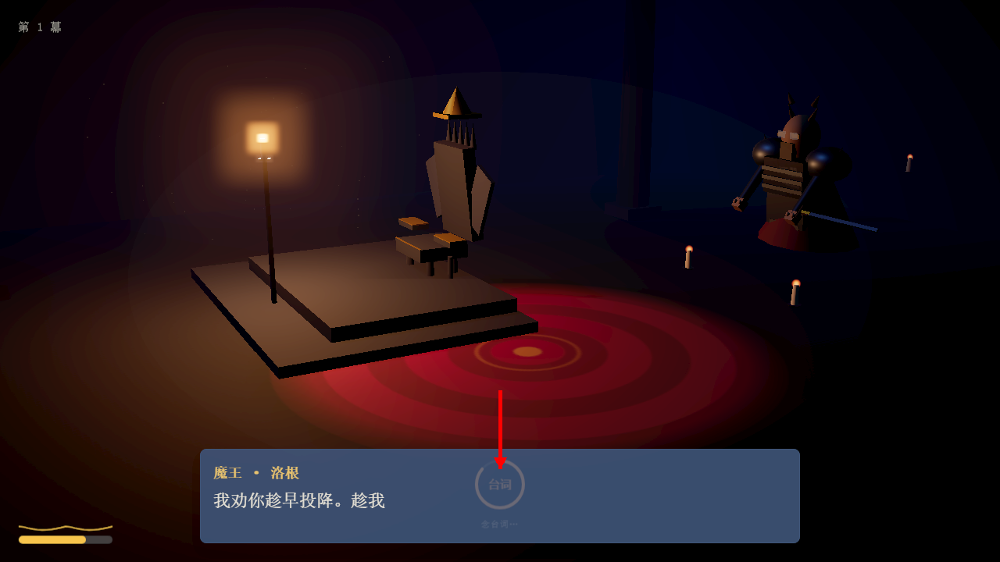
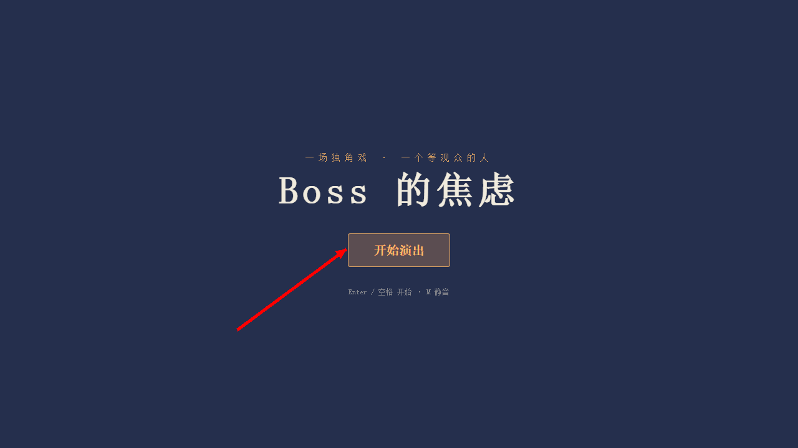
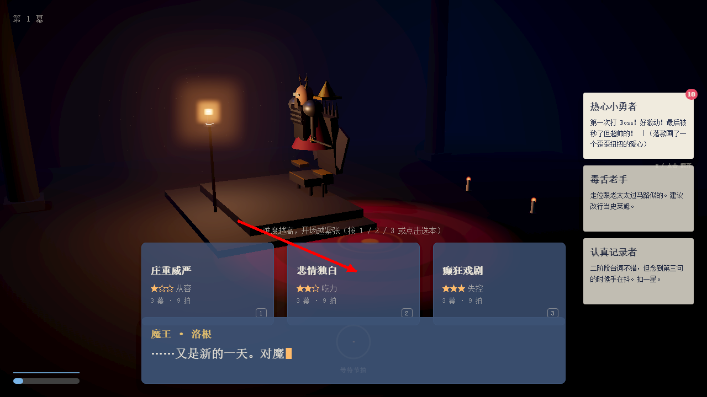
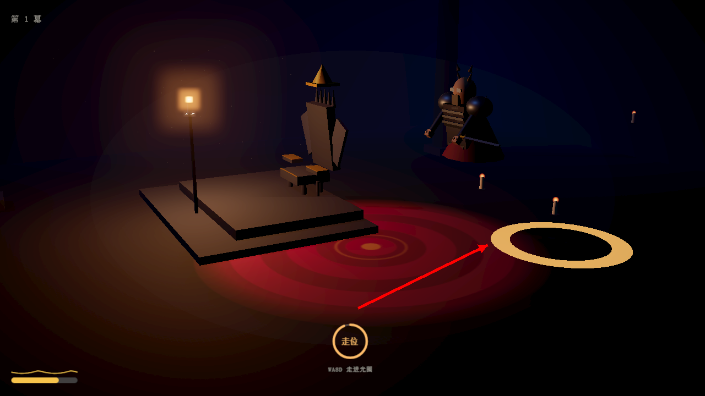
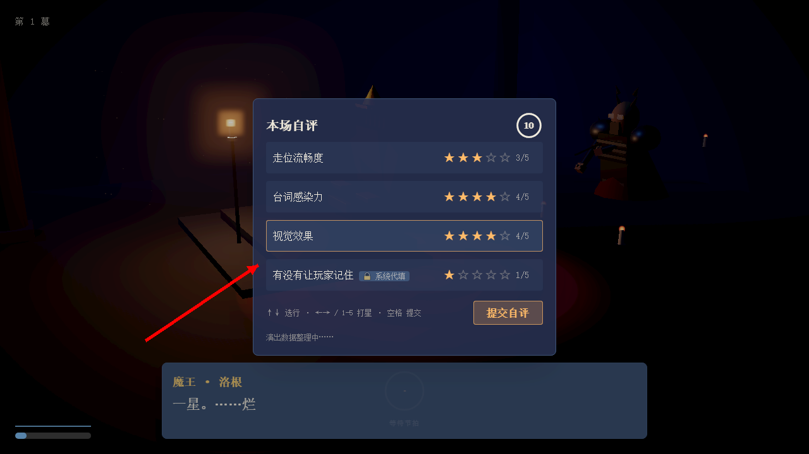
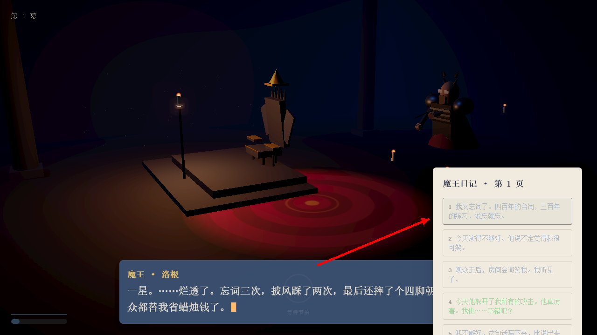
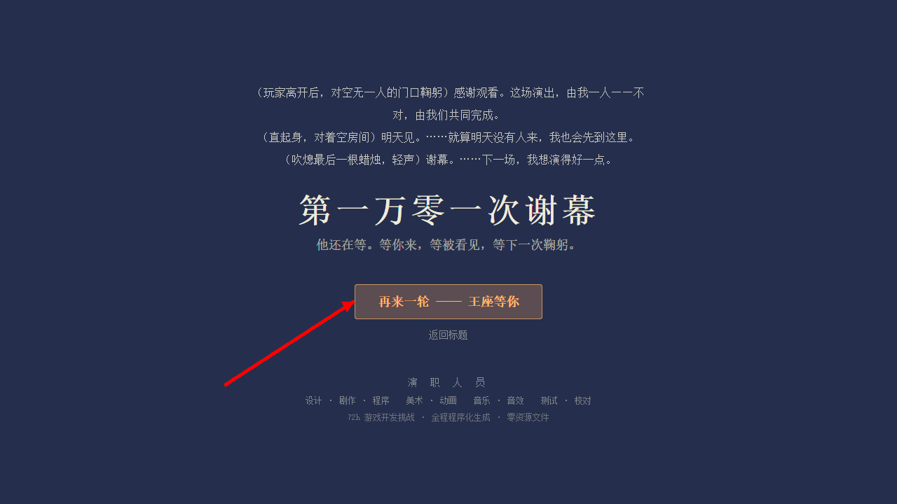

1一句话玩法
你在舞台上按剧本演出：走位、出手、念台词。玩家的影子步步逼近并攻击你——被击倒 3 次提前谢幕，撑过 4 轮迎来结局。一轮约 2–3 分钟，最多 4 轮。
| 按键 | 作用 |
|---|
| WASD | Boss 走位（走进金色光圈） |
| 鼠标左键 | 攻击（节拍圈变红时按下） |
| 1 2 3 | 选剧本（庄重 / 悲情 / 癫狂） |
| 空格 / Enter | 开始游戏 · 跳过对白 |
| E | 翻挑战者档案 |
| Esc | 暂停 |
2节拍圈 = 你要做的事
屏幕下方的圆环显示当前节拍和剩余时间（弧线走完 = 时间到）：
| 圆环状态 | 含义 | 你要做的 |
|---|
| 橙色 · 走位 | 站到地板光圈里 | WASD 走进光圈 |
| 红色 · 攻击 | 出手时机 | 按鼠标左键 |
| 橙色 · 台词 | Boss 在念台词 | 不用操作（焦虑高会忘词） |
| 灰色 · 等待 | 演出间隙 | 等着 |

台词节拍：圆环显示节拍类型和倒计时，台词自动念
3一局怎么打
① 标题 → 选剧本
- 点「开始演出」进入（或按 Enter）。
- 1 庄重威严 ★ / 2 悲情独白 ★★ / 3 癫狂戏剧 ★★★，难度越高开场越紧张。
- 选完 2 秒内开演。Boss 独坐王座，玩家影子从走廊尽头逼近。

点「开始演出」进入

选今晚的剧本——难度越高开场越紧张
② 走位
- 金色光圈出现 = 当前是走位节拍。按 WASD 把 Boss 挪进光圈。
- 光圈变绿 = 站到位（记入走位分）。

走进金色光圈，变绿即站到位
③ 出手
- 节拍圈变红时按左键出手；没按 = 空挥落空（+焦虑）。
④ 自评
- 四轴 1–5 星：走位 / 台词 / 视觉自己打，「有没有让玩家记住」系统代填。
- 总分 ≥4.5 完美、≥3.5 合格。给高星 → 下轮焦虑降。

四轴打分，倒计时 10 秒
⑤ 日记 → 结局
- 选一句写下来（或等 8 秒自动写）。第 4 轮结束（或被击倒 3 次）→ 谢幕结局。

选一句写下来，或等 8 秒自动写

「再来一轮」重开，「返回标题」回标题
4焦虑值（隐藏 0–100）
界面不显示数字，用画面表现：
| 阶段 | 表现 |
|---|
| 0–30 从容 | 手稳、台词完整 |
| 31–60 紧张 | 起手犹豫，偶尔结巴 |
| 61–85 发抖 | 忘词、打偏 |
| 86–100 恐慌 | 剑脱手、跪地喘息 |
焦虑来源：被逼近、弹幕、被命中、忘词、被打断。缓解：完成阶段、自评高星、日记写正面的话。
5小贴士
台词框能点——跳过打字机 / 切下一句；不点也会自动更新。
Boss 有时会不动——被命中会倒地、整理头发，焦虑满会跪地。这些"演出事故"本身也是戏。
没有输赢——只有"演得好不好"。打满 3 幕 + 总评 ≥4.5 = 完美轮，累积"被看见度"决定结局是掌声还是空房间。
写 3 次"我不够好"后，下一轮开头会出现隐藏选择——选「我也累了」进入隐藏谢幕。